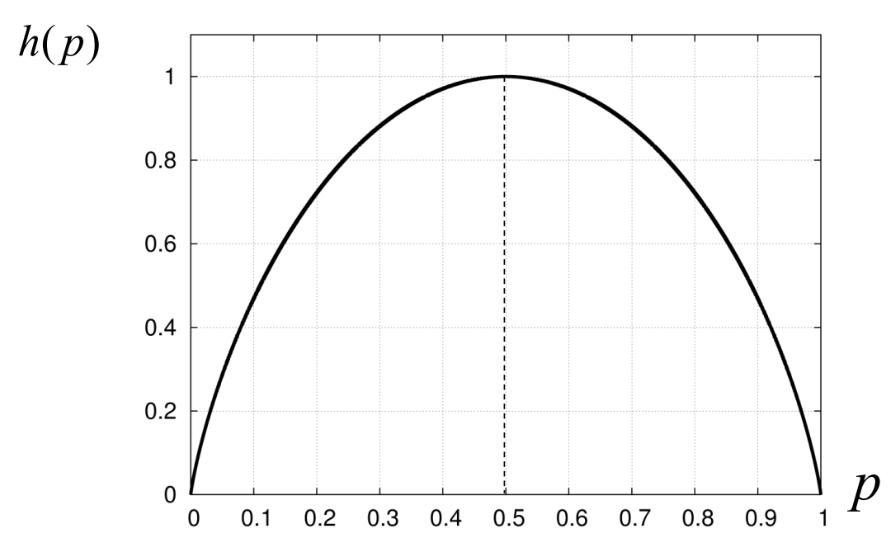
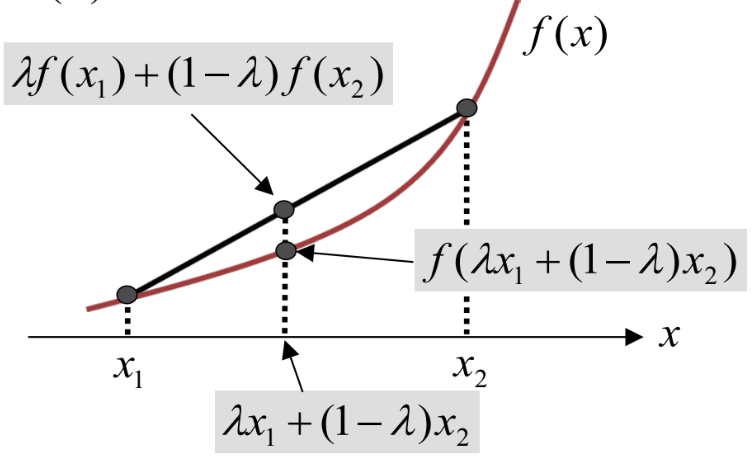
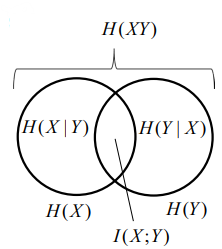
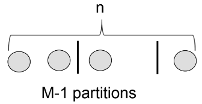
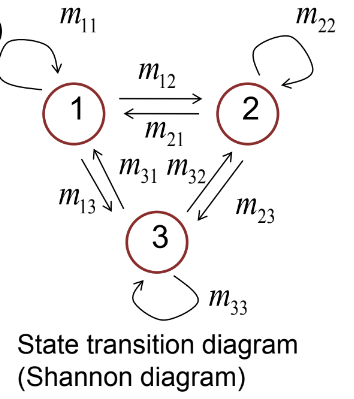

Summary
| Difinitions and Properties | $X$ and $Y$ are independent |
|---|---|
| [ joint probability ] | |
| $\displaystyle P(x,y)$ | $\forall x\in\mathcal{X},y\in\mathcal{Y},\ P(x,y)=P(x)P(y)$ |
| [ conditional probability ] | |
| $\displaystyle \forall x\in\mathcal{X}, y\in\mathcal{Y},\ P(y\mid x)=\frac{P(x,y)}{P(x)}$ | $\forall x\in\mathcal{X},y\in\mathcal{Y},\ P(y\mid x)=P(y)$ |
| [ expectation ] | |
| $\displaystyle E[X]=\sum_{x\in\mathcal{X}}xP(x)$ $\displaystyle E[aX+bY+c]=aE[X]+bE[Y]+c$ | $E[XY]=E[X]E[Y]$ |
| [ variance ] | |
| $\displaystyle \begin{eqnarray}\mathrm{Var}[X]&=&E[X-E[X]]^2\\&=&E[X^2]-E[X]^2\end{eqnarray}$ $\mathrm{Var}[aX+b]=a^2\mathrm{Var}[X]$ | $\mathrm{Var}[aX+bY+c]=a^2\mathrm{Var}[X]+b^2\mathrm{Var}[Y]$ |
| [ entropy ] | |
| $\displaystyle \begin{eqnarray}H(X)&=&H(P)\\&=&E_P[-\log P(X)]\\&=&-\sum_{x\in\mathcal{X}}P(x)\log P(x)\end{eqnarray}$ $\displaystyle H(X)\ge 0$ $\displaystyle \underset{P}{\arg\max}\ H(P)$ is uniform distribution. $\displaystyle\underset{P}{\max}H(P)\le\log|\mathcal{X}|$ | |
| [ conditional entropy ] | |
| $\displaystyle H(X\mid y)=-\sum_{x\in\mathcal{X}}P(x\mid y)\log P(x\mid y)$ $\displaystyle \begin{eqnarray}H(X\mid Y)&=&\sum_{y\in\mathcal{Y}}P(y)H(X\mid y)\\&=&-\sum_{x\in\mathcal{X},\ y\in\mathcal{Y}}P(x,y)\log P(x\mid y)\\&=&E_{X,Y}[-\log P(X\mid Y)]\end{eqnarray}$ | $H(X\mid Y)\le H(X)$ |
| [ joint entropy ] | |
| $\displaystyle \begin{eqnarray}H(XY)&=&E_{X,Y}[-\log P(X,Y)]\\&=&-\sum_{x\in\mathcal{X},\ y\in\mathcal{Y}}P(x,y)\log P(x,y)\end{eqnarray}$ $\displaystyle \begin{eqnarray}H(XY)&=&H(Y)+H(X\mid Y)\\&=&H(X)+H(Y\mid X)\end{eqnarray}$ | |
| [ divergence ] | |
| $\displaystyle \begin{eqnarray}D(X\ \Vert\ Y)&=&D(P\ \Vert\ Q)\\&=&E_P\left[\log\frac{P(X)}{Q(X)}\right]\\&=&\sum_{x\in\mathcal{X}}P(x)\log\frac{P(x)}{Q(x)}\end{eqnarray}$ $D(P\ \Vert\ Q)\ge 0$, Equality holds when $P=Q$ | |
| [ mutual information ] | |
| $I(X;Y)=H(X)-H(X\mid Y)$ $I(X;Y)=I(Y;X)$ $I(X;Y)=D(P(x,y)\ \Vert\ P(x)P(y))$ | $I(X;Y)\ge 0$ |
Mathematical Model of Source
-
Source alphabet
$\Omega=\{a_1,a_2,\ldots,a_M\}$ : finite (descrete) alphabet. -
Stationary memoryless source 定常無記憶情報源
$\displaystyle S= \begin{pmatrix} a_1 & a_2 & \cdots & a_M \\ p_1 & p_2 & \cdots & p_M \end{pmatrix} $
Random Variable and Probability Distribution
-
Random variable, r.v.
$X$ : A real-valued function on $\Omega$ .
$X(a_i)=x_i$ : (A variable its value is probabilistically fixed) -
Probability distribution
$\mathrm{Pr}\{X=x_i\}=P(x_i)=p_i$
$\displaystyle \sum_x P(x)=1$
Expectation and Variance
-
Expectation
- $\displaystyle E[X]=\sum_xxP(x)$
- if $X$ and $Y$ are independent, then $E[XY]=E[X]E[Y]$
- Linearity: $E[aX+bY+c]=aE[X]+bE[Y]+c$
-
Variance
- $ \displaystyle \begin{eqnarray} \mathrm{Var}[X]&=&E(X-E[X])^2=E[X^2]-E[X]^2 \\ &=&\sum_x(x-E[X])^2p(x)=\sum_xx^2p(x)-\left(\sum_xxp(x)\right)^2 \end{eqnarray} $
- $\mathrm{Var}[aX+b]=a^2\mathrm{Var}[X]$
-
if $X$ and $Y$ are independent:
$\mathrm{Var}[aX+bY+c]=a^2\mathrm{Var}[X]+b^2\mathrm{Var}[Y]$
Chebyshev's Inequality
-
Markov's inequality
$Z$ : nonnegative r.v.
$\mu=E[Z]$
$$\mathrm{Pr}\{Z\ge a\}\le\frac{\mu}{a}\tag{1}$$ $\displaystyle \because \mu=\sum_{z:z\ge a}zP(z)+\sum_{z:z\lt a}zP(z)\ge \sum_{z:z\ge a}zP(z)\ge a\sum_{z:z\ge a}P(z)$ -
Chebyshev's inequality
$Z$ : real-valued r.v.
$\mu=E[Z]$
$\sigma^2=\mathrm{Var}[Z]$ $$\mathrm{Pr}\{|Z-\mu|\ge a\}\le\frac{\sigma^2}{a^2}\tag{2}$$ $\because$ In Markov's inequality
$\displaystyle \mathrm{Pr}\{(Z-\mu)^2\ge a^2\}\le \frac{E[(Z-\mu)^2]}{a^2}=\frac{\sigma^2}{a^2}$
$(Z-\mu)^2\ge a^2\Rightarrow |Z-\mu|\ge a$
Law of Large Numbers
$X_1,\cdots,X_n$ : independent$S_n=X_1+\cdots+X_n$ $$\forall\epsilon \gt 0\ \ \lim_{n\to\infty}\mathrm{Pr}\left\{\left|\frac{S_n}{n}-\mu\right|\ge\epsilon\right\}=0\tag{3}$$ ※確率の平均と実測値の平均の誤差は $0$ に収束する．
$\because$ Apply Cebyshev's inequality to $Z=S_n/n$ $ \displaystyle \mathrm{Pr}\left\{\left|\frac{S_n}{n}-\mu\right|\ge\epsilon\right\}\le\frac{\displaystyle\mathrm{Var}\left[\frac{S_n}{n}\right]}{\epsilon^2}=\frac{\displaystyle \frac{\sigma^2}{n}}{\epsilon^2}=\frac{\sigma^2}{n\epsilon^2}\to 0\ \ (n\to\infty) $
Conditional Probability
-
Events $A,B\subset \Omega$
$$P(B\mid A)=\frac{P(A\cap B)}{P(A)}\tag{4}$$ -
r.v.s $X\in\{x_1,x_2,\ldots,x_M\},\ Y\in\{y_1,y_2,\ldots,y_N\}$
Marginal distribution: $$P(x)=\sum_yP(x,y)\tag{5}$$ Conditional distribution: ※ Bayes' theorem $$P(y\mid x)=\frac{P(x,y)}{P(x)}=\frac{P(x,y)}{\displaystyle \sum_yP(x,y)}=\frac{P(x\mid y)P(y)}{\displaystyle\sum_yP(x\mid y)P(y)}\tag{6}$$ - $X$ and $Y$ are independent. $$P(x|y)=P(x),\ \ P(y|x)=P(y)$$
Entropy
-
$X\in\mathcal{X}=\{a_1,\ldots,a_M\}$ : r.v.
$P(x)=\mathrm{Pr}\{X=x\}$
$\displaystyle S= \begin{pmatrix} a_1 & a_2 & \cdots & a_M \\ p_1 & p_2 & \cdots & p_M \end{pmatrix} $
Entropy of $X$ (or $P$): $$ \begin{eqnarray} H(X)=H(P)&=&E_p\left[-\log P(X)\right] \\ &=&-\sum_{x\in\mathcal{X}}P(x)\log P(x) \\ &=&-\sum_{i=1}^Mp_i\log p_i \end{eqnarray} \tag{7} $$ - randomness of $X$ , measure of ambiguity (曖昧さの指標)
- $H(X)\ge 0\phantom{000}\because 0\le P(X)\le 1\phantom{00}(\mathrm{if}\ \mathcal{X}\ \text{is finite})$
- The base of $\log$ is arbitrary(任意): $2(\text{bit})$ , $e(\text{nat})$ , $10(\text{dit})$
Binary Entropy Function
$\mathcal{X}=\{0,1\}$$P(1)=1-P(0)=p$
$\displaystyle S= \begin{pmatrix} 0 & 1 \\ 1-p & p \end{pmatrix} $
$H(X)=-p\log p-(1-p)\log(1-p)=h(p)$

Convex Function

$\mathbf{x}\in\mathbb{R}^k\ f(\mathbf{x})$ is convex [concave]
$\iff\ \forall \mathbf{x}_1,\mathbf{x}_2\in\mathbb{R}^k,\phantom{00} \forall\lambda\in[0,1]$ $$\lambda f(\mathbf{x}_1)+(1-\lambda)f(\mathbf{x}_2)\ge f(\lambda \mathbf{x}_1+(1-\lambda)\mathbf{x}_2)\tag{8}$$ $$[\lambda f(\mathbf{x}_1)+(1-\lambda)f(\mathbf{x}_2)\le f(\lambda \mathbf{x}_1+(1-\lambda)\mathbf{x}_2)] \tag{9}$$ 
Jensen's inequality
$\mathbf{X}$ : r.v. ($\mathbb{R}^k$-valued)$$f(x)\phantom{0} \text{is convex}\Rightarrow E[f(\mathbf{X})]\ge f(E[\mathbf{X}])\tag{10}$$
Concavity of Entropy
$$\text{Entropy}\phantom{0}H(X)=H(P)\phantom{0}\text{is concave with respect to }P\tag{11}$$- Proof:
-
For $0\le\alpha\le 1, P_1,P_2$ let $P=\alpha P_1+(1-\alpha)P_2$
It is sufficient to prove: $\alpha H(P_1)+(1-\alpha)H(P_2)\le H(P)$
Since $f(t)=t\log t\phantom{0}(t\gt 0)$ is convex, ($\because f''(t)=1/t\gt 0$) from Jensen's ineq.,
$\alpha P_1(x)\log P_1(x)+(1-\alpha)P_2(x)\log P_2(x)$
$\phantom{000}\ge\{\alpha P_1(x)+(1-\alpha)P_2(x)\}\log \{\alpha P_1(x)+(1-\alpha)P_2(x)\}$
Sum up thee both sides over $x\in\mathcal{X}$
Divergence (Kullback-eibler divergence)
-
$X\sim P(x),\ Y\sim Q(y)$ : rv. ($\mathcal{X}$-valued)
$$D(X||Y)=D(P||Q)=E_p\left[\log\frac{P(X)}{Q(X)}\right]=\sum_{x\in\mathcal{X}}P(x)\log\frac{P(x)}{Q(x)}\tag{12}$$ - Pseudo distance from $P(x)$ to $Q(x)$ (疑似距離)
-
$$D(P||Q)\ge 0\text{, Equality holds when } P=Q\tag{13}$$
$\displaystyle\because D(P||Q)=\sum_{x\in\mathcal{X}}P(x)\left\{\log\frac{P(x)}{Q(x)}+\frac{Q(x)}{P(x)}-1\right\}$
$\displaystyle t=\frac{Q(x)}{P(x)}$.
Since $\log t\le t-1$ ("$=$" holds when $t=1$) , $\displaystyle \log\frac{P(x)}{Q(x)}+\frac{Q(x)}{P(x)}-1\ge 0$
Entropy of Uniform Distribution
Entropy of a finite r.v. is maximized by the uniform distribution.$M=|\mathcal{X}|$ , $\displaystyle S=\begin{pmatrix}a_1&a_2&\cdots&a_M \\ \frac{1}{M} & \frac{1}{M} & \cdots & \frac{1}{M}\end{pmatrix}$ , $$H(X)\le \log M\tag{14}$$
- Proof:
-
Let $X\sim P(x)$ and $ Q(x)=1/M$
$\displaystyle \begin{eqnarray} D(P||Q)&=&\sum_{x\in\mathcal{X}}P(x)\log\frac{P(x)}{1/M} \\ &=&\sum_{x\in\mathcal{X}}P(x)\log M + \sum_{x\in\mathcal{X}}P(x)\log P(x) \\ &=&\log M - H(P) \ge 0 \end{eqnarray} $
Conditional Entropy
$$H(X|y)=-\sum_{x\in\mathcal{X}}P(x|y)\log P(x|y)$$ Conditional entropy of $X$ given $Y$ $$ \begin{eqnarray} H(X|Y)&=&\sum_{y\in \mathcal{Y}}P(y)H(X|y) \\ &=&\sum_{y\in\mathcal{Y}}P(y)\left\{-\sum_{x\in\mathcal{X}}P(x|y)\log P(x|y)\right\} \\ &=&-\sum_{x\in\mathcal{X},y\in\mathcal{Y}}P(x,y)\log P(x|y) \\ &=& E_{X,Y}[-\log P(X|Y)] \end{eqnarray} $$Joint Entropy
Entropy of the pair of r.v.s, $(X,Y)$ $$H(XY)=E_{X,Y}[-\log P(X,Y)]=-\sum_{x\in\mathcal{X},y\in\mathcal{Y}}P(x,y)\log P(x,y)$$ Chain rule of entropy: $$H(XY)=H(Y)+H(X|Y)=H(X)+H(Y|X)$$- Proof:
- $\displaystyle \begin{eqnarray} H(X|Y)&=&-\sum_{x,y}P(x,y)\log P(x|y) \\ &=&-\sum_{x,y} P(x,y)\log \frac{P(x,y)}{P(x)} \\ &=&-\sum_{x,y}P(x,y)\log P(x,y) + \sum_{y}P(y)\log P(y) \\ &=& H(XY) - H(Y) \end{eqnarray} $
Mutual Information (相互情報量)
- Definition: $$I(X;Y)=H(X)-H(X|Y)$$ decrease of the ambiguity of $X$ by knowing $Y$
- $$ \begin{eqnarray} I(X;Y)&=&H(X)-H(X|Y) \\ &=&H(X)-H(XY)+H(Y) \\ &=&H(Y)-H(Y|X) \\ &=&I(Y;X) \end{eqnarray} $$
- 
-
Properties:
$$
I(X;Y) = D(P(x,y)||P(x)P(y))
$$
- Proof:
- $\displaystyle \begin{eqnarray} I(X;Y)&=&H(X)-H(X|Y) \\ &=&-\sum_xP(x)\log P(x)+\sum_{x,y}\log P(x|y) \\ &=&-\sum_{x,y}P(x,y)\log P(x) + \sum_{x,y}P(x,y)\log P(x|y) \\ &=&\sum_{x,y}P(x,y)\log\frac{P(x|y)}{P(x)} \\ &=&\sum_{x,y}P(x,y)\log\frac{P(x|y)P(y)}{P(x)P(y)} \end{eqnarray} $
- Properties2: $$I(X;Y)\ge 0 \iff P(x,y)=P(x)P(y) \iff X \text{ and } Y \text{are independent}$$ In other words, $H(X|Y)\le H(X)$
Sequence (系列)
- $\mathcal{X}=\{0,1,2\}$, Sequence: $\mathbf{x}=012201$
Type of a Sequence (タイプ, 経験分布)
-
For a sequence $\mathbf{x}=x_1x_2\cdots x_n\in\mathcal{X}^n$, Type of sequence $\mathbf{x}$:
$$P_\mathbf{X}(x)=\frac{1}{n}N(x\mid \mathbf{x})$$
※ $N(x\mid \mathbf{x})$ : Count of $x\in\mathcal{X}$ in $\mathbf{x}$
i.e. $\displaystyle\mathcal{X}=\{0,1\},\ \mathbf{x}=\{00101\},\ P_{\mathbf{x}}(0)=\frac{2}{5},\ P_{\mathbf{x}}(1)=\frac{3}{5},\ P_{\mathbf{x}}=\left(\frac{2}{5},\frac{3}{5}\right)$ -
$\mathtt{P}_n$ : Set of all possible types of length $n$.
i.e. $\displaystyle \mathcal{X}=\{0,1\},\ \mathtt{P}_n=\left\{(0,1),\left(\frac{1}{n},\frac{n-1}{n}\right),\ldots,\left(\frac{n-1}{n},\frac{1}{n}\right),(1,0)\right\}$ - Total number of types ($M=|\mathcal{X}|$)
$$|\mathtt{P}_n|=\begin{pmatrix}n+M-1\\M-1\end{pmatrix}$$
$\because$
 $$|\mathtt{P}_n|\le(n+1)^{M-1}$$ $\because$ A type is specifed by $M-1$ elements. An element can take $n+1$ values.
($0, 1/n, \ldots,1$) - The probability that a sequence of type $P$ is generated from a stationary memoryless source (distribution: $Q$) is about $$\exp\{-nD(P\ \Vert\ Q)\}$$ (Proof omitted.)
-
For each $P\in\mathtt{P}_n$ :
$$T^n(P)=\{\mathbf{x}\in\mathcal{X}^n\mid P_\mathbf{x}=P\}$$
i.e.
$\mathcal{X}=\{0,1,2\},\ \mathbf{x}=01210,\ P_\mathbf{x}=(3/6,2/6,1/6)$
$\displaystyle T^6(P_\mathbf{x})=\{000112,000121,\ldots,211000\},\ |T^6(P_\mathbf{x})|=\frac{6!}{3!2!1!}=60$ -
Probability of a sequence $\mathbf{x}$ : $\displaystyle Q^n(\mathbf{x})=\prod_{i=1}^nQ(x_i)$
i.e.
$\mathcal{X}=\{0,1\},\ Q(0)=3/4, Q(1)=1/4$
$\displaystyle Q^{20}(\mathbf{x})=\left(\frac{3}{4}\right)^{N(0\mid\mathbf{x})}\left(\frac{1}{4}\right)^{N(1\mid\mathbf{x})}=\frac{3^{N(0\mid \mathbf{x})}}{4^{20}}$
A sequence is $\varepsilon$-typical ($\varepsilon$強典型的)
-
$\mathcal{X}=\{0,1\},\ Q(0)=3/4, Q(1)=1/4$,
$(1)\ 00000000000000000000$
$(2)\ 10100000000100100100$
(1) has the highest prob. but (2) seems more typical.
$\mathbf{x}$ is (strongly) $\varepsilon$-typical: $$\forall x\in\mathbf{x},\ |P_\mathbf{x}(x)-Q(x)|\le\frac{\varepsilon Q(x)}{\log M}$$ $T_\varepsilon^n(Q)$: Set of all $\varepsilon$-typical sequences.
Asymptotic Equipartition Property; AEP (漸近的等分割性)
-
$$\forall \mathbf{x}\in T_\varepsilon^n(Q),\ \left|\frac{1}{n}\log Q^n(\mathbf{x})+H(Q)\right|\le\varepsilon$$
Meaning: Prob. of any typical sequence is $\exp\{-nH(Q)\}$ (in case of $\log_e$)
$\mathbf{x}$ is $\varepsilon$-weakly typical ($\varepsilon$弱典型的): $\displaystyle \left|\frac{1}{n}\log Q^n(\mathbf{x})+H(Q)\right|\le\varepsilon$ - For sufficiently large $n$, $$\forall\lambda \gt 0,\ \mathrm{Pr}\{X^n\in T_\varepsilon^n(Q)\}\ge 1-\lambda$$ Meaning: Prob. that the sequence is typical is almost $1$. A typical sequences almost never appear.
- For sufficiently large $n$, $$(1-\lambda)\exp\{n(H(Q)-\varepsilon)\}\le|T_\varepsilon^n(Q)|\le\exp\{n(H(Q)+\varepsilon)\}$$ Meaning: The number of typical sequences is about $\exp\{nH(Q)\}$ (in case of $\log_e$).
Classes of Information Sources (情報源の分類)
-
Discrete-time source: A datum is generated every fixed time period.
($\iff$ Continuous-time source)
-
Element of $\mathcal{X}$ (symbol, letter): Discrete: Discrete source Continuous: Continuous source - Stochastic process (確率過程): Sequence of r.v.s $$\mathbf{X}=(X_i;i=1,2,\ldots)=(X_1X_2\ldots X_n\ldots)$$ $$\mathrm{Pr}\{X_i X_{i+1}\ldots X_jx_i x_{i+1}\ldots x_j\}=Q_i^j(x_i x_{i+1}\ldots x_j)$$
Stationary Source (定常情報源)
- Stationary source: $$\forall n,\forall x_1^n\in\mathcal{X}^n,\ Q_1^n(x_1^n)=Q_i^{i+n-1}(x_1^n)\phantom{00}i=1,2,\ldots$$ Sequence of the same pattern has the same probability even if the starting point is moved.
-
(Stationary) Ergodic source (in stationary source)
$\mathbf{X}=(X_1X_2\cdots X_n\cdots)$, $$\forall k\in\mathbb{N},\ \lim_{n\to\infty}\frac{1}{n}\sum_{i=0}^{n-1}f(X_{i+1},X_{i+2},\ldots,X_{i+k})=E[f(x_1,X_2,\ldots,X_k)]$$ ※ $f$ is a function on $\mathcal{X}^k$
Left side: Time average. Right side: Ensemble average. The probabilistic structure of the source is identified if the sample is observed for a long time.
Stationary Memoryless Source
-
Stationary Memoryless Source:
$\mathcal{X}=\{a_1,\ldots,a_M\}$
$$\begin{pmatrix}a_1 & a_2 & \cdots & a_M \\ Q(a_1) & Q(a_2) & \cdots & Q(a_M)\end{pmatrix}$$ Also called stationary independent source or i.i.d source. - Distribution of $x_1^n$ : $$Q_1^n(x_1^n)=\prod_{i=1}^nQ(x_i)$$
Markov Source マルコフ連鎖
-
Simple Markov source 単純マルコフ情報源 :
given by a Simple Markov chain 単純マルコフ連鎖 :
If $X_i$ is fixed, $X_1X_2\cdots X_{i-1}$ and $X_{i+1}$ are independent.If $\{X_i\}$ is a Markov chain, $X_i$ is called the state at time $i$.
$\iff$ $X_{i+1}$ depends only on $X_i$ (previous state).
Transition prob.: $$M_i(x'\mid x)=\mathrm{Pr}\{X_{i+1}=x'\mid X_i=x\}$$ If $M_i(x'\mid x)$ are invariant over $i$ : Homogeneous Markov chain 斉次マルコフ連鎖.
This is characterized by its initial state and a State transition matrix $\mathbf{M}=(M(x'\mid x))$.
Distribution of $x_1^n$ : $$\begin{eqnarray}Q_1^n(x_1^n)&=&Q_1^1(x_1)\prod_{i=2}^nQ_i^i(x_i\mid x_{i-1}) \\ &=&Q_1^1(x_1)\prod_{i=2}^nM(x_i\mid x_{i-1})\end{eqnarray}$$ -
$k$-th order Markov source
$$Q_1^n(x_1^n)=Q_1^k(x_1^k)\prod_{i=k+1}^nM(x_i\mid x_{i-k}^{i-1})$$ -
State transition matrix ($K$ states)
$$\mathbf{M}=\begin{pmatrix}m_{11}&m_{12}&\cdots&m_{1K}\\m_{21}&m_{22}&\cdots&m_{2K}\\\vdots&\vdots&\ddots&\vdots\\m_{K1}&m_{K2}&\cdots&m_{KK}\end{pmatrix}$$ $m_{ij}=M(j\mid i)=\mathrm{Pr}\{X_{n+1}=j\mid X_n=i\}$ (Prob. of the transition from $i$ to $j$.)
Sum or each row is $1$. $\displaystyle \iff \mathbf{M}\cdot\begin{pmatrix}1\\\vdots\\1\end{pmatrix}=\begin{pmatrix}1\\\vdots\\1\end{pmatrix}$
 -
Stationary Distribution 定常分布
Initial distribution: $\boldsymbol{\pi}^{(1)}=(Q_1^1(1),\ldots,Q_1^1(K))$
State distribution at the next time point: $\boldsymbol{\pi}^{(2)}=\boldsymbol{\pi}^{(1)}\mathbf{M}$
State distribution at $(n+1)$-th time point: $\boldsymbol{\pi}^{(n+1)}=\boldsymbol{\pi}^{(1)}\mathbf{M}^n$
Stationary Distribution: $\boldsymbol{\pi}$ satisfying $\boldsymbol{\pi}=\boldsymbol{\pi}\mathbf{M}$
If it is possible to go with positive probability from any state of the Markov chain to any other state in a finite number of steps,
the Markov chain is said to be Irreducible Markov chain 既約なマルコフ連鎖
$\Rightarrow$ There exists a unique stationary distribution.
$\phantom{\Rightarrow}$ And the Markov chain is stationary ergodic. ??? -
Hidden Markov Source 隠れマルコフ情報源
Simple Markov chain: $X_1\to X_2\to \cdots$, $$(Y_1,Y_2,\ldots,Y_n,\ldots)=(f(X_1),f(X_2),\ldots,f(X_n),\ldots)$$ ※ $f$ : Function from $\mathcal{X}$ to $\mathtt{Y}$
Probabilistic output is also considered instead of the deterministic function $f$. $$ \begin{matrix} X_1&\to& X_2&\to&\cdots& \to & X_n&\to&\cdots\\ \downarrow && \downarrow &&&& \downarrow \\ Y_1 && Y_2 && \cdots && Y_n && \cdots \end{matrix} $$ Only $Y_1,Y_2,\ldots$ are observed. $\Rightarrow$ Modeling of speech signal or time-series data.
Coding
- Encoder 符号化器 $\varphi$
- Decoder 複合化器 $\psi$
-
Code word 符号語: output of the encoder.
- Fixed-length code 固定長符号: The lengths of code words are fixed.
- Variable-length code 可変長符号: The lengths of code words are variable.
-
Further classification regarding the length of the input blocks.
FF code(Fixed-to-Fixed), FV code(Fixed-to-Variable),
VF code(Variable-to-Fixed), VV code(Variable-to-Variable)
Fixed-Length Source Coding Theorem
-
Consider a code encoding a data sequence of length $n$ from a stationary memoryless source $(X\sim Q(x))$ into a codeword of length $m$ with a coding alphabet $\mathtt{U}\ (|\mathtt{U}|=K)$.
Coding rate $R\equiv m/n$.
We introduce entropy $H_k(X)\equiv H(X)/\log K$.-
Theorem 6.1 (Achievability, 達成可能性)
If $R\gt H_K(X)$, for any $\lambda\gt 0$ , by taking $n$ sufficiently large, we can construct an FF code with decoding error probability no more than $\lambda$. -
Theorem 6.2 (Non-achievability, 非達成可能性)
If $R\lt H_k(X)$, the decoding error probability of any FF code $(\varphi,\psi)$ satisfies $$\mathrm{Pr}\left\{\psi(\varphi(X^n))\neq X^n\right\}\ge 1-\lambda$$ for any $\lambda\gt 0$ and all sufficiently large $n$.
-
Theorem 6.1 (Achievability, 達成可能性)